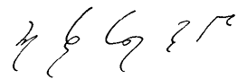

| Home Reporting A Judge’s Charge Dupraw’s Notes Sklarew’s Notes Zoubek’s Notes Pre-Anniversary Description Reference Material Brief Form List Anniversary Description Reading Material Reference Material Brief Form List Most-Used Phrases Simplified Description Brief Form List Dupraw on Note Size Diamond Jubilee Description Brief Form List Expert Brief Form List Series 90 Description Brief Form List Centennial Description Brief Form List Taquigrafía Gregg Gramálogos German Gregg Manual Esperanto Gregg Manual Brief Forms Irish Gregg Manual Gregg Group Gregg Learning Forum Ms. Letha’s SH Site Shorthand³ Omniglot's Entry Wikipedia's Entry Stenospeed Dictation Practice Andrew Owen |
WE CALL THEM "SHORTCUTS" But there’s nothing haphazard about the principles by which our reporters can simplify terms recurring day in and day out By Charles Lee Swem I sometimes wish that the word “shortcut” had never been introduced as a recognized word in the terminology of shorthand writing It is a good enough word and does express a particular concept of abbreviation that we employ in reporting, but it is a word that is much overemphasized, to the point that there is usually ascribed to it an exaggerated meaning that it does not possess. Fortunately for the beginning shorthand student, he hears little of it as he learns the basic elements of shorthand, for it plays little or no part in that early aspect of his shorthand education. Yet once he has acquired a certain ability as a fast writer and he contemplates a reporting career, he learns then, for the first time, that there are other outlines and other phrases that he has not been taught. “Shortcuts,” they are popularly called. He notices, among other things, chiefly that they are shorter and easier to write and, on the whole, much faster. So novel and pleasing is the discovery that he jumps to the natural conclusion that here is something that is going to relieve him of all his burdens. This, unfortunately, is the attitude that the inexperienced mind too often is led to accept by our common and indiscriminate use of the term “shortcut”; for “short cut” is not what we have in mind at all. Even the dictionary does not sanction the usage of the word as strictly describing that process of abbreviation by which our system has provided a catalogue of shorter outlines and phrases common to reporting. “Shortcutting,” as an ordinary English word, connotes something haphazard, hit-or-miss, and spontaneous, which is as far removed as the poles from what we mean when we “shortcut” in shorthand. Abbreviate is a much better word, for “abbreviate,” both in dictionary meaning and in common usage, implies a concept of order and logic. One of the dictionary synonyms of “abbreviate” is “curtail,” meaning literally to cut off—not to cut out or to rearrange or to gouge out. The fact is that all legitimate shortcutting is a process of curtailment only—nothing else. Since “curtail” means essentially to cut off the end, what is more accurately descriptive of our fundamental Abbreviating Principle, by which we cut off the endings of words, leaving the initial body of the word standing unaltered and clearly suggestive of the complete word? But since we have and probably always shall have the word “shortcut” with us, let us analyze the function which we perform under that name and provide our own definition. Fundamentally, we abbreviate or curtail. Let us take up our methods of abbreviation in the order of their importance. Shorthand is described in the dictionary as “a rapid method of writing by using symbols and abbreviations for letters, words, etc.” Undoubtedly our first principle of abbreviation is by means of symbols which we call brief forms or, sometimes, wordsigns. These consist of the very brief outlines for the commonest words of the language and may be classed as symbols, although they are, for the most part, only curtailed outlines. In all ordinary, nontechnical shorthand writing, these are confined to those words making up the bulk of our normal, everyday speech. We find this process of abbreviation illustrated in outlines like
Reporting, however, is not confined to the writing of nontechnical language. It embraces all types of speech, perhaps the greater part of it technical, and in all technical language there are other words just as frequently recurring as the commonest words of everyday speech. For these words, the system has provided the same sort of abbreviated symbols or brief forms. Thus, for the common words of legal terminology, we have such brief forms as
In addition to which, many other words common to the wider general vocabulary that the reporter must possess are also expressed by brief forms; such, for instance, as
It will be observed that none of these words are haphazardly shortened, hut follow one or more of the principles of abbreviation laid down in the Manual. They follow chiefly the original Abbreviating Principle, which I might call the curtailing principle, by which the tail is cut off but the head is left for ready identification purposes. Words like prior, trial, and rate, are perfect examples of forms that are curtailed at the end of a distinctive vowel, where the following consonant is not strongly stressed. It is principally in phrasing where the curtailing of outline is practiced in reporting, but here, too, the curtailing is practiced according to the same principle by which single words are abbreviated. The governing principle for this kind of shortcutting is what I have sometimes called the Word-and-a-Half Principle, meaning simply the writing in full of the initial word of the phrase or the compound, and then drastically shortening, or cutting off, the rest—a logical and inevitable extension of the original Abbreviating Principle. It is found in such compounds words as 
but the principle becomes of special importance in the writing of phrases. Consider how distinctive are the following phrases and how consistently they are abbreviated:
Modifying the principle but slightly, we achieve such distinctive and rapid phrases as
The fourth major principle of abbreviation is a principle applied also to phrases for the most part, consisting of the Intersecting Principle. This is a principle logically deriving from the same original Abbreviating Principle, wherein the words so phrased are abbreviated to their first stroke and intersected. Consider how consistently logical and distinctive are the following typical examples of this principle:
The Intersecting Principle probably finds its greatest usefulness in the abbreviation of highly polysyllabic words of common occurrence. In the last example, we are giving you a few of the commonest long words occurring daily in the courts, logically and systematically reduced to brief and legible outlines. You can apply this principle to hundreds of other expressions that you meet again and again in your daily work.
I have thus illustrated the four major principles of abbreviation employed by reporters: the Brief Form or wordsign, the Abbreviating Principle, the Word-and-a-Half Principle, and the Intersecting Principle. They all stern from the Abbreviating Principle taught in the Manual. Their use is neither haphazard nor arbitrary, but follows one consistent concept of abbreviation, that of writing the initial and distinctive body of the word or phrase, and confining whatever abbreviating is done to the less distinctive or ending of the word or phrase. Curtailing, if you please, and not “shortcutting.” The [following image], containing some of the phrases used by Mr. [Peter J.] Galati in his reporting of hearings before the Placement and Unemployment Insurance Division of the Department of Labor in New York City, gives an interesting example of these principles in practice.
From The Gregg Writer, September, 1947; pp. 30-34 |